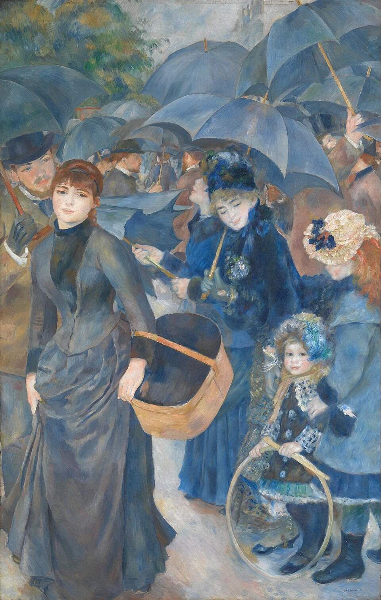

伞 The Umbrellas
雷诺阿 · 约1881–86年 · 伦敦国家美术馆（2026年10月–2027年1月在伦敦展览《雷诺阿与爱》中展出）
Pierre-Auguste Renoir · About 1881–6 · The National Gallery, London (on show in London in the exhibition Renoir and Love, October 2026 – January 2027)
图片：Wikimedia Commons，公有领域 / Image: Wikimedia Commons, public domain

发现 · Discover
一片伞 A canopy of umbrellas
画面上方四分之一，几乎都被至少十几把伞遮住了。
The top quarter of the picture is mostly filled by a canopy of at least a dozen umbrellas.
母亲和两个女儿 A mother and her daughters
右边是一位母亲和两个女儿。这一组用的是典型的印象派笔法，轻柔得像羽毛。
On the right are a mother and her two daughters, painted in a typically Impressionist way, with soft, feathery touches.
打开伞的女子 Opening an umbrella
中间那位侧面女子，抬头看着，正在打开她的伞。
The woman in profile in the centre looks up as she opens her umbrella.
左边的年轻女子 The young woman on the left
她最初也是在1881年左右画的，四年后被雷诺阿重新画过：轮廓更分明，五官更精确，和右边的人物画法完全不同。
She was first painted around 1881, then repainted by Renoir about four years later, with clearer outlines and more precise features, quite unlike the figures on the right.
时装会说话 Fashion tells the date
右边人物的衣服是1881年左右的款式；左边年轻女子的裙子，线条更硬朗，到1885年左右才流行起来。
The clothes on the right follow the fashion of around 1881. The dress of the young woman on the left, with its more severe lines, only came into fashion around 1885.
很难卖出去 Hard to sell
同一幅画里有两种画法、两种时装，这让它在雷诺阿生前很难卖出去。
Two styles and two fashions in one picture made it hard to sell during Renoir's lifetime.
故事 · The story
ACT I 第一幕 · 1881年 1881
大约1881年，雷诺阿用轻柔的印象派笔法，画下了右边的母亲、两个女儿和打开伞的女子。
Around 1881, Renoir painted the mother, her two daughters and the woman opening her umbrella on the right, in soft Impressionist brushstrokes.
约1881–86年 · 伦敦国家美术馆 / About 1881–6 · The National Gallery, London
ACT II 第二幕 · 四年后 Four years later
大约四年后，他又回到这幅画前。这时他已经开始离开印象派，转向古典艺术。他重新画了左边的两个人物，加上了背景里的人群和所有的伞。
About four years later he returned to the canvas. By now he was moving away from Impressionism towards classical art. He reworked the two figures on the left, and added the crowd behind and all the umbrellas.
约1881–86年 · 伦敦国家美术馆 / About 1881–6 · The National Gallery, London
ACT III 第三幕 · 伦敦与都柏林 London and Dublin
1917年，它作为休·莱恩爵士遗赠的一部分，进入伦敦国家美术馆，并和都柏林的休·莱恩美术馆轮流展出。2026年到2031年，它长期借展给都柏林；2026年10月到2027年1月，它暂时回到伦敦，在国家美术馆的展览《雷诺阿与爱》中展出。
In 1917, it came to the National Gallery in London as part of the Sir Hugh Lane Bequest, and is shared with the Hugh Lane Gallery in Dublin. It is on long loan to Dublin from 2026 to 2031; from October 2026 to January 2027 it is back in London for the National Gallery's exhibition Renoir and Love.
约1881–86年 · 伦敦国家美术馆 / About 1881–6 · The National Gallery, London
一幅画，两个雷诺阿。 One painting, two Renoirs.
作品档案 · Artwork record
| 画家（生卒年） · Artist (dates) | 皮埃尔-奥古斯特·雷诺阿（1841–1919） / Pierre-Auguste Renoir (1841–1919) |
|---|---|
| 画名 · Title | 伞 / The Umbrellas |
| 年份 · Date | 约1881–86年 / About 1881–6 |
| 材质 · Medium | 布面油画 / Oil on canvas |
| 尺寸 · Dimensions | 180.3 × 114.9 cm |
| 收藏地 · Collection | 伦敦国家美术馆（休·莱恩爵士遗赠，1917年；与都柏林休·莱恩美术馆合作） / The National Gallery, London (Sir Hugh Lane Bequest, 1917. In partnership with Hugh Lane Gallery, Dublin) |
| 来源说明 · Credit line | 目前展出：伦敦国家美术馆展览《雷诺阿与爱》，2026年10月3日–2027年1月31日；之后回到都柏林休·莱恩美术馆（长期借展至2031年2月23日） / Currently on show in the National Gallery exhibition Renoir and Love, 3 October 2026 – 31 January 2027; then back to the Hugh Lane Gallery, Dublin (long loan until 23 February 2031) |
关于画家 · About the artist
皮埃尔-奥古斯特·雷诺阿（1841–1919），法国画家。他和莫奈在学画时就是好友，是印象派的核心人物之一。19世纪80年代，他开始离开印象派，转向古典艺术。
Pierre-Auguste Renoir (1841–1919) was a French painter. He and Monet became friends as students, and he was one of the leading Impressionists. In the 1880s he began to move away from Impressionism towards classical art.
更多雷诺阿的画 · More by Pierre-Auguste Renoir